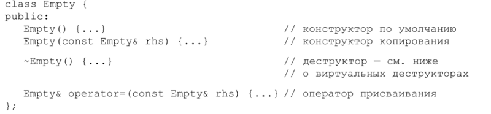
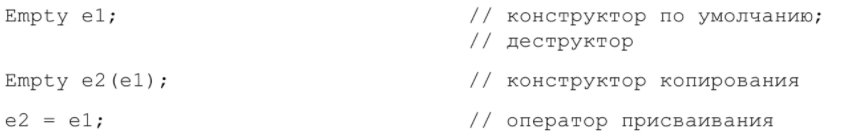
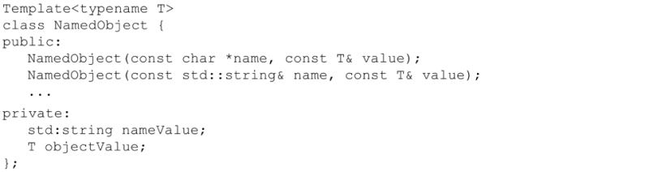
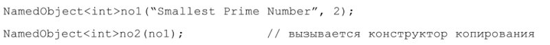
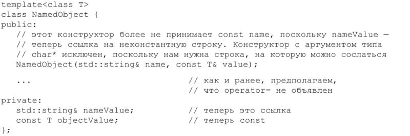
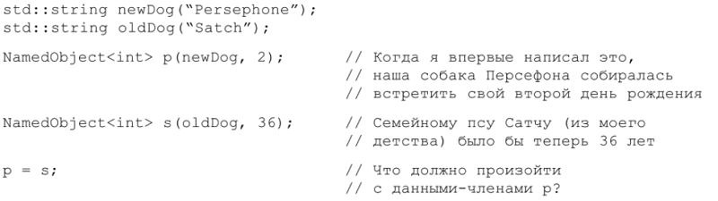

⇐Глава 2. Конструкторы, деструкторы и операторы присваивания
Когда пустой класс перестает быть пустым? Когда за него берется C++. Если вы не объявите конструктор копирования, оператор присваивания или деструктор самостоятельно, то компилятор сделает это за вас. Более того, если вы не объявите вообще никакого конструктора, то компилятор автоматически создаст конструктор по умолчанию. Все эти функции будут открытыми и встроенными (см. правило 30). Например, такое объявление:
class Empty {};
эквиваленто следующему:
Эти функции генерируются, только если они нужны, но мало найдется случаев, когда без них можно обойтись. Так, следующий код приведет к их автоматической генерации компилятором:
Итак, компилятор пишет эти функции для вас, но что они делают? Конструктор по умолчанию и деструктор – это места, в которые компилятор помещает служебный код, например вызов конструкторов и деструкторов базовых классов и нестатических данных-членов. Отметим, что сгенерированный деструктор не является виртуальным (см. правило 7), если только речь не идет о классе, наследующем классу, у которого есть виртуальный деструктор (в этом случае виртуальность наследуется от базового класса).
Что касается конструктора копирования и оператора присваивания, то сгенерированные компилятором версии просто копируют каждый нестатический член данных исходного объекта в целевой. Например, рассмотрим шаблон NamedObject, который позволяет ассоциировать имена с объектами типа Т:
Поскольку в классе NamedObject объявлен конструктор, компилятор не станет генерировать конструктор по умолчанию. Это важно. Значит, если вы спроектировали класс так, что его конструктору обязательно должны быть переданы какие-то аргументы, то вам не нужно беспокоиться, что компилятор проигнорирует ваше решение и по собственной инициативе добавит еще и конструктор без аргументов.
В классе NamedObject нет ни конструктора копирования, ни оператора при сваивания, поэтому компилятор сгенерирует их (при необходимости). Посмотрите на следующее употребление конструктора копирования:
Конструктор копирования, сгенерированный компилятором, должен инициализировать no2.nameValue и no2.objectValue, используя по1.name Value и no1.objectValue соответственно. Член nаmеvаluе имеет тип string, aв стандартном классе string объявлен конструктор копирования, поэтому по2.nameValue. Изирован вызовом конструктора копирования string с аргументов no1.name Value. С другой стороны, член NameObject<int>::objectValue имеет тип int (поскольку Т есть іnt в данной конкретизации шаблона), а іnt – встроенный тип, поэтому по2.objectValue будет инициализирован побитовым копированием no1.object Value.
Сгенерированный компилятором оператор присваивания для класса NamedObject<int> будет вести себя аналогичным образом, но, вообще говоря, сгенерированная компилятором версия оператора присваивания ведет себя так, как я описал, только в том случае, когда в результате получается корректный и осмысленный код. В противном случае компилятор не сгенерирует operator=.
Например, предположим, что класс NamedObject определен, как показано ниже. Обратите внимание, что name Value – ссылка на string, a objectValue имеет тип const T:
Посмотрим, что произойдет в приведенном ниже коде:
Перед присваиванием и p.name Value, и s.nameValue ссылались на объекты string, хотя и на разные. Что должно произойти с членом p.nameValue в результате присваивания? Должен ли он ссылаться на ту же строку, что и S.name Value, то есть должна ли модифицироваться ссылка? Если да, это подрывает основы, потому что С++ не позволяет изменить объект, на который указывает ссылка. Но, быть может, должна модифицироваться строка, на которую ссылается член p.name Value, и тогда будут затронуты другие объекты, содержащие указатели или ссылки на эту строку, хотя они и не участвовали непосредственно в присваивании? Это ли должен делать сгенерированный компилятором оператор присваивания?
Сталкиваясь с подобной головоломкой, C++ просто отказывается компилировать этот код. Если вы хотите поддерживать присваивание в классе, включающем в себя член-ссылку, то должны определить оператор присваивания самостоятельно. Аналогичным образом Компилятор ведет себя с классами, содержащими Константные члены (такие как оbjесtValue во втором варианте класса NamedObject выше). Модифицировать константные члены запрещено, поэтому компилятор не знает, как поступать при неявной генерации оператора присваивания. Кроме того, компилятор не станет неявно генерировать оператор присваивания в проИзводном классе, если в его базовом объявлен закрытый оператор присваивания. И наконец, предполагается, что сгенерированные компилятором операторы присваивания для производных классов должны обрабатывать части базовых классов (см. правило 12), но при этом они конечно же не могут вызывать функции-члены, доступ к которым для них запрещен.